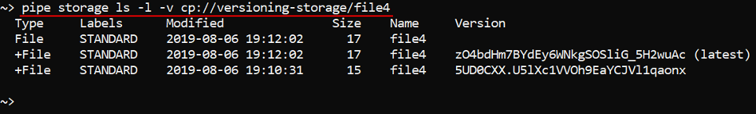
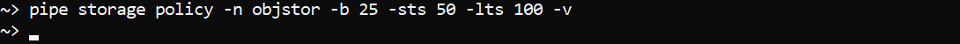

14.3. Manage Storage via CLI
- Create a data storage
- Delete a data storage
- Create a folder in a storage
- Upload and download data
- Control File versions
Cloud Pipeline CLI has to be installed. See 14.1. Install and setup CLI.
Create a data storage
pipe storage create [OPTIONS]
In the example below data storage "my-personal-storage1" for bucket "my-personal-bucket1" is created in the "ROOT" folder. -c flag is to create a bucket in the cloud.
Note: "Description", "STS", "LTS", "Backup time" and "Type of the cloud for data storage" fields are left empty. That means that their values will be default.
pipe storage create -p my-personal-bucket1 -n my-personal-storage1 -c -f ROOT
Delete a data storage
pipe storage delete [OPTIONS]
In the example below we delete the "my-personal-bucket1" storage.
pipe storage delete -n my-personal-bucket1

Create a folder in a storage
Create a folder in a data storage with the following:
pipe storage mkdir [OPTIONS] FOLDERS...
In the example below we will create the folder "new-folder" in the data storage "my-personal-bucket2".
pipe storage mkdir cp://my-personal-bucket2/new-folder

Upload and download data
Command to upload/download data:
pipe storage cp [OPTIONS] SOURCE DESTINATION
Examples below demonstrate how to upload/download data and check the results:
# 1. Recursively copy a folder from a local system to S3 bucket (Upload the data).
pipe storage cp ~/data cp://input-data/ --recursive
# Application will start uploading files and print progress
# Output will be similiar to this:
# [##############################] 100% 1.fastq 3/3 b
# [##############################] 100% 2.fastq 4/4 b
# 2. Check that data is uploaded - list cloud storage
pipe storage ls cp://input-data --recursive
# Listing output will be similiar to this:
# Type Labels Modified Size Name
# File STANDARD 2017-10-24 17:39:37 3 1.fastq
# File STANDARD 2017-10-24 17:39:39 4 2.fastq
# 3. Recursively copy a folder from s3 bucket to the local system (Download the data).
pipe storage cp cp://input-data/ ~/data --recursive
Note: --recursive flag is not needed when you copy a single file.
Note: Earlier CLI could not accept remote paths other than cp://. For backward compatibility s3:// path is also available now and is treated in the same manner as cp://.
Note: Files uploaded via CLI will have the following attributes and values automatically set:
- CP_OWNER. The value of the attribute will be set as a user ID.
- CP_SOURCE. The value of the attribute will be set as a local path used to upload.
The example below demonstrates automatic file tagging after data uploading to the bucket s3://my-personal-bucket2/:
pipe storage cp tagged-file s3://my-personal-bucket2/

pipe storage get-object-tags s3://my-personal-bucket2/tagged-file

Control File versions
Show files versions
Command to view storage contents:
pipe storage ls [OPTIONS] [PATH]
In the examples below we check the contents of the data storage.
Flag -l is used to show file details:
pipe storage ls cp://my-versioning-test -l

pipe storage ls cp://my-versioning-test -l -v
-v flag is used to view storage contents. It is available for users with ROLE_ADMIN or OWNER properties.
Note: file "1.txt" has 2 versions:

To view versions of specific file specify its name after the directory name:
pipe storage ls cp://my-versioning-test/1.txt -l -v

Restore files
Command to restore a previous version of a file:
pipe storage restore <path to a file> -v <Version>
The commands below show how to check file versions, set the previous version of a file as the latest and verify that everything went fine:
pipe storage ls cp://my-versioning-test/1.txt -l -v
pipe storage restore cp://my-versioning-test/1.txt -v <Version>
pipe storage ls cp://my-versioning-test/1.txt -l -v

Note: When a specified version of the "1.txt" is restored, a copy of that version is created to become the latest version of the file.
You can restore a deleted file without specifying a version. It works only for files with a "Delete marker" as the latest version ("1.txt" in the example below):
pipe storage restore cp://my-versioning-test/1.txt

Note: Before we restored the file "1.txt" its latest version was a "Delete marker". After restoration, it disappeared.
Delete an object from a data storage
Command to set a "Delete marker":
pipe storage rm <path to a file>
Note: the object will remain in a data storage and be available for pipe storage restore command.
In the example below we set a "Delete marker" to the file "2.txt":
pipe storage rm cp://my-versioning-test/2.txt

Note: the latest version of the file "2.txt" is marked with "Delete marker" now.
To completely delete an object from a data storage use -d (--hard-delete) option.
Change backup duration, select STS/LTS duration, enable versioning
Command to change backup duration, select STS/LTS duration or enable versioning:
pipe storage policy [OPTIONS]
In the example below backup duration (-b) is set to 25 days, STS (-sts) and LTS (-lts) durations are set to 50 days and 100 days respectively for the data storage "my-versioning-test". Also, we enable versioning (-v) for that data storage:
pipe storage policy -n my-versioning-test -b 25 -sts 50 -lts 100 -v
